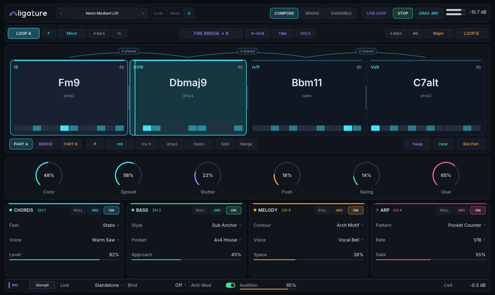

Dossier 08 · Human Being Audio · 28 November 2026
A chord, phrase and bridge generator for producers who write on a loop. It has to beat Captain, Pilot, Scaler and LANDR Composer at the everyday job, then add what none of them do: the bars between sections, key changes included, played live.
Try it. Press play, then launch B. The bridge starts by itself so B lands on the next 4-bar phrase. Hold a bridge's play button to keep building, then let go to land. Click any chord, lane, stutter cell or bridge to change it while it loops. Shift-launch skips the bridge.
Why v1 failed

v1 Compose tab, rendered today from the build in .worktrees/ligature
engine.cpp:967), so Live's loop brace, scrubbing and tempo changes knocked it out. v2 computes its position from the host's PPQ every block and schedules every launch at an absolute beat.The model
In notation a ligature binds notes into one gesture. In this plugin it binds sections. Every tool in this category writes a verse or a chorus. Writers get stuck on the bars that join them, so those bars get their own object.
Verse, chorus, drop, break. Each has its own key, length (1 to 16 bars) and part settings, and loops while you edit it.
A short section owned by the join between two sections. It knows both keys, plays with every part, and can be fired or held live.
Chords, bass, melody and arp or counter-line, each on its own MIDI channel. A stutter lane acts on all of them.
Chords
Select a chord and the inspector shows its neighbourhood as three rings. The inner ring holds the key's own chords, the middle ring borrowed and secondary chords, the outer ring chromatic and experimental moves. Hover a chip to see how many notes it keeps from the chords on either side. Click it and it takes over from the next bar. Scaler spreads this across several pages; here it is one gesture away from the chord you are on.
The progression library ships as genre packs that transpose into any section's key: pop (axis, doo-wop, royal road, Creep, Mixolydian), UK garage and 2-step, deep house m9 planing, liquid drum and bass, future garage, trance, neo-soul, afro house, drill (harmonic minor), lo-fi, city pop and ambient. Load one from the section inspector in the mock above.
| Gesture | What it does |
|---|---|
| Scroll on the selected chord | Next or previous inversion. The roll redraws while the loop plays. |
| Drag a chord's edge | Change its length in beats, snapping to the grid. Split with a double-click. |
| Colour: Triad · 7 · 9 · 11+ | Adds or strips extensions while keeping the chord's function. |
| Voicing: Close · Drop 2 · Spread | Changes the shape of the chord. More shapes (shell, house stab, quartal) come with the genre packs. |
| Voice-leading on | Re-voices the whole progression with the least movement and shows the total in semitones per loop. |
| Pin a chord, then Mutate | Keeps the pinned chords and rewrites the rest at the chosen boldness. |
Parts
The harmony lane decides which notes are available. Each part lane decides when they play. Changing one never breaks the other, so you can swap a chord without losing a bassline you like, or change the bass rhythm without touching the harmony.
Every part has the same three moves. Style picks a pattern family. Density thins or fills it. Mutate rolls a new take at one of three strengths: Nudge keeps the rhythm and changes the notes, Twist keeps the shape and changes the rhythm, Rewrite changes both. Click a melody, arp or bass note to pin it, and mutations grow around it. The inspector shows four alternative takes as thumbnails, ready to click.
Anchor, garage 2-step, offbeat house, rolling, walking, reese hold, octave bounce, chromatic approach notes, and follow-kick, which reads the groove from a kick clip.
Motif (a one-bar idea developed as A, A′, B, cadence), hook, call and response, contour (draw a line and the melody follows it), and counter-to-vocal, which steers around a guide melody you play in.
Chord feels: hold, stabs, 2-step, push (lands an 8th early), pulse, strum, swell. Arp and counter: up 16ths, pluck 8ths, guide-tone counter-line, trance gate, broken chord. Rate halves or doubles the patterned styles.
The stutter lane handles timing that no player would play: 1/32 and 1/64 ratchets, gates, retrigger fills, half-time drops, tape-stop bends and reverse swells. It is a row of cells under the parts, so you can see at a glance where the timing breaks. Each cell acts on the parts you tick. None of the four competitors documents anything like it.
Bridges and key changes
Scaler 3 already suggests modulation routes between two scales. Ligature goes further: the route becomes a section of its own, voice-led from the last chord of A into the first chord of B, with every part playing. It lands on the phrase, and you can fire it live.
Each key gets a colour from its place on the circle of fifths: F minor is magenta, C major is gold. A bridge's chords tint from one to the other, so you can see the key turn. A chord that fits both keys, counting chords the new key borrows from its parallel mode, gets a PIVOT tag. That is the moment the ear accepts the new key. One Bold setting orders the routes from smooth to wild, and every route has a 1, 2 and 4-bar form.
Routes from F minor to C major, generated by the same solver the mock uses. No chord is diatonic to both keys, so the plain pivot family drops out here; it appears when one exists, as in the Glass Lift preset. Change either section's key in the mock and the solver recomputes.
Live
Everything happens while the loop runs. Edits land on the next bar, and nothing stops the transport. There are three performance controls.
Bridges are timed from where they land, not from when you press. The same 2-bar bridge in three situations.
Length and timing without a menu of choices. Sections run from 1 to 16 bars and any chord can be any length; drag its edge. Rate halves or doubles a patterned part, so half-time bass under a double-time arp is two clicks. Bridges stretch or squeeze to fit whatever time is left. Odd meters come later as a section setting.
Performance. Every section and bridge is a MIDI note (from C-1 up) and appears on a Push or Launchpad grid: sections along a row, bridges as hold pads. A Scene parameter lets the host automate launches in the arrangement. Everything you play, bridges included, is captured, and drags out as one MIDI file per part or as the whole performance.
In the DAW
Host playing: Ligature reads the host's position every block and follows loop braces, scrubbing and tempo changes. The top bar reads HOST. Host stopped: Ligature runs its own preview clock for auditioning and reads PREVIEW, which is what you hear in the mock. The two never fight.
One plugin, any number of instances. The first instance leads. Any other instance can follow it and output a single part. Scaler users report that its per-channel output collapses onto one track in Ableton Live, so in Live each part gets its own follower and nothing depends on channel filtering. DAWs that filter channels well can take all parts from one instance on channels 1 to 4.
MIDI in. Play one key for a whole chord: white keys trigger the section key's chords. Play a chord and Ligature names it and drops it into the selected slot.
Sound. Builds 1 to 4 use quick sketch sounds. Before 1.0, each part plays through one of the studio's own engines, so Ligature sounds finished on its own and introduces the other instruments. Your own synths can still take over any part.
| DAW | Planned setup |
|---|---|
| Ableton Live | Leader on one MIDI track. One follower per part on its own MIDI track; each instrument track takes MIDI From that follower. |
| Logic Pro | Leader and followers as MIDI FX in each instrument's MIDI FX slot. |
| Bitwig | One instance, channels 1 to 4 to instrument tracks; or followers. |
| Reaper | One instance, MIDI sends filtered by channel. |
| FL Studio | Followers, or one instance with a MIDI out port per part. |
| Cubase | One instance, MIDI tracks taking its output by channel. |
Each row gets checked in that DAW during Build 4.
Against the field
Checked against vendor pages, release notes, reviews and forum threads on 28 November 2026. "Not found" means nothing in what we read, not proof of absence.
| Captain 8 + Pilot 2 | Scaler 3 | LANDR Composer | Ligature 2 | |
|---|---|---|---|---|
| Chord library | Progression presets with complexity layers | 1,000+ chord sets tagged by mood, genre and artist | Common progressions, inversions, embellishments | Genre packs, plus a palette of every chord near the current one |
| Phrase parts | Melody, Deep bass, Beat; Pilot adds melody, bass, arp and chords | Motions for phrases, melodies and basslines | Chords, melody, arp, bass | Chords, bass, melody, arp or counter, stutter |
| See every note | Not found | Arrange page lanes | Not found | Piano roll per part, voice-leading lines, lit keyboard |
| Key changes | One key per song | Modulation Pathways suggest routes | Not found | Eight route families, played as voice-led bridges |
| Bars between sections | Not found | Not found | Not found | Six ligature kinds |
| Live launching | Captain Play triggers chords | Keyboard binds and keyswitches | Not found | Section launch with phrase landing, elastic bridges, hold to build |
| Stutter and glitch timing | Not found | Not found | Not found | Stutter lane on every part |
| Parts on separate tracks in Live | Not documented | Users report channels collapse onto one track | Drag only | One follower instance per part |
| Price | Epic was $99 at its 2023 launch | $99 list | $149 | $99 list, $69 at launch |
Sources: Captain Plugins, Captain release notes, Pilot Plugins, Scaler 3, Scaler forum on Live routing, LANDR Composer, MusicRadar on LANDR Composer, KVR on LANDR Composer.
Build order
Song strip with sections and bridge knots, harmony lane, piano rolls for all four parts, the chord palette, the host-locked transport with its HOST and PREVIEW badge, MIDI out on channels 1 to 4, and drag-out per part. v1's six bridge solvers move onto the knots. v1's three tabs and six dials go away, and everything they controlled moves into the new window, so nothing v1 did is lost.
Land control, backtimed and elastic bridges, hold to build, the key-colour morph, the eight route families, return bridges, MIDI-mappable launches and the Scene automation parameter.
The motif melody engine, Nudge, Twist and Rewrite, pin and regrow, the alternative-takes shelf, chord feels, Rate, the stutter lane and the theory lens.
Follower instances, capture, one-key chord triggering, chord naming from played notes, Push and Launchpad layouts, the genre packs, factory presets, and a routing check in each DAW.
Each part plays through the studio's own engines: Torus Glide for chords and arps, Lineage or Tract Form for bass, Datum and Strike Body for the beat. This build ships before 1.0. Builds 1 to 4 keep the sketch sounds, so the core design can move fast.
Audio-to-chord detection, odd meters, MPE output, and a phrase model trained in-house from the studio's MIDI model research.
What carries over. Cutline's piano roll and chord strip (products/cutline/ui/src/grid_stage*) are the starting point for the lanes. hba_core's smf.h writes the MIDI files; hba_plugin_host's StateMailbox and TelemetryChannel carry state between engine and editor; StudioHistory gives undo and A/B. From v1, harmony code in core/src/harmony.cpp stays where new tests pass. The engine clock, the scene logic and the whole editor are rewritten.
Decided · 28 November 2026